SD
SADAR DIRI
Portal Superadmin
Panduan Penggunaan
Portal Superadmin
SADAR DIRIMenjaga layanan, tanpa membaca cerita.
Petunjuk langkah demi langkah untuk mengelola akun, kelas, tahun ajaran, pengumuman,
konten, laporan agregat, audit log, sampai kebijakan retensi data sekolah.
Seluruh gambar diambil langsung dari aplikasi yang berjalan pada layar desktop.
Bab 04–06
Akun & akses
Tambah akun, reset sandi, impor massal, dan penonaktifan.
Bab 07–10
Kelas & tahun ajaran
Penugasan Guru BK, kenaikan kelas, dan pratinjau aman.
Bab 11–16
Layanan & tata kelola
Pengumuman, konten, laporan, audit, retensi, pengaturan.
1
Siapkan tahun ajaran
Kelas dulu, baru akun siswa.
2
Tugaskan Guru BK
Tanpa penugasan, data tak terbaca.
3
Tutup dengan audit
Periksa jejak akses setiap bulan.
“Admin mengelola layanan, bukan isi jiwa. Jurnal dan refleksi siswa tidak pernah terbuka di portal ini.”
Enam aspek kesejahteraan psikologis (Ryff) yang dipantau
Penerimaan diriRelasi positifKemandirian
Penguasaan diriTujuan hidupPertumbuhan
Daftar Isi
Isi panduan & peran Anda
Bab 01–02 berlaku untuk semua pengguna. Bab 03–16 khusus portal superadmin.
A
Peta isi
01Masuk ke aplikasi3
02Verifikasi dua faktor & ganti sandi4
03Dashboard admin5
04Akun pengguna6
05Menambah akun7
5.1Akun siswa7
5.2Akun Guru BK7
06Reset sandi & impor CSV8
6.1Reset satu akun8
6.2Impor massal8
07Kelas & penugasan9
7.1Membuat kelas9
08Ubah kelas & tugaskan BK10
8.1Mengubah data kelas10
8.2Menugaskan Guru BK10
09Tahun ajaran11
10Kenaikan kelas12
10.1Alur aman kenaikan12
11Pengumuman13
11.1Membuat pengumuman13
12Konten pembelajaran14
13Laporan agregat15
14Audit log16
15Retensi data17
16Pengaturan sekolah18
17Rutinitas, masalah, bantuan19
B
Batas peran superadmin
| Yang bisa Anda lakukan | Yang bukan wewenang Anda |
|---|
| Membuat, mengubah, menonaktifkan akun siswa dan Guru BK. |
Membaca isi jurnal, refleksi, dan catatan konseling. |
| Mengelola kelas, tahun ajaran, penugasan Guru BK, dan kenaikan kelas. |
Menilai atau memverifikasi prestasi siswa. |
| Mengatur pengumuman, konten, laporan agregat, dan kebijakan retensi. |
Menghapus audit log; catatan akses bersifat permanen. |
C
Konvensi penulisan
TebalTombol, menu, atau kolom yang harus diklik.
MiringContoh isian, nama status, atau kutipan singkat.
BadgeStatus data yang tampil di antarmuka.
1Urutan langkah; kerjakan dari atas ke bawah.
D
Sebelum mulai
1Layar desktop
Tata letak web penuh: sidebar muncul di layar 1024 piksel ke atas. Tidak ada versi ponsel.
2Akun superadmin
Dibuat lewat seeder atau perintah artisan, bukan dari menu Pengguna.
3Urutan kerja
Tahun ajaran → kelas → penugasan BK → akun siswa, agar data tidak menggantung.
E
Batas akses tiap peran
| Peran | Yang dapat dibuka |
|---|
| Superadmin | Seluruh menu admin, pengaturan, audit log, dan laporan agregat — tanpa isi jurnal siswa. |
| Guru BK | Data dan jurnal siswa pada kelas yang ditugaskan kepadanya. |
| Siswa | Data, jurnal, refleksi, dan portofolio miliknya sendiri. |
Prinsip pemisahan. Admin mengelola layanan dan akun, bukan membaca isi psikologis siswa. Portal siswa dan Guru BK selalu bertata letak ponsel; admin web penuh.
Bab 01 · Semua peran
Masuk ke aplikasi
Satu pintu untuk siswa, Guru BK, dan superadmin.
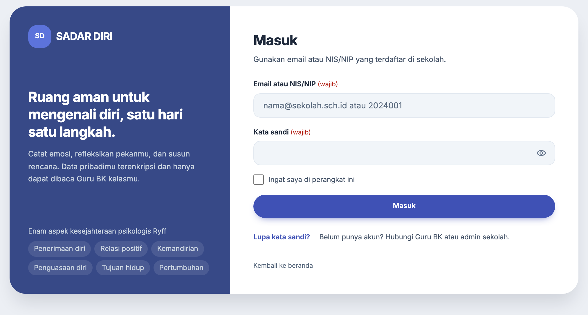
Gambar 1. Halaman masuk. Panel kiri menjelaskan tujuan aplikasi dan enam aspek kesejahteraan Ryff; formulir ada di kanan.
1.1
Cara masuk
- Buka alamat aplikasi. Anda langsung diarahkan ke halaman Masuk.
- Isi Email atau NIS/NIP dengan akun superadmin, mis. ADM001.
- Isi Kata sandi. Di komputer sekolah, hindari mencentang Ingat saya.
- Klik Masuk. Anda diarahkan ke dashboard admin.
Lupa kata sandi? Gunakan tautan pemulihan di bawah formulir. Bila email admin tidak aktif, pemulihan harus dilakukan lewat perintah artisan di server.
Akun belum aktif? Hanya akun berstatus active yang dapat masuk. Status akun diubah dari menu Pengguna.
1.2
Bila muncul pesan gagal
| Pesan | Artinya & tindakan |
|---|
| Kredensial tidak cocok | Akun atau sandi salah. Periksa huruf besar/kecil, lalu coba lagi atau pakai pemulihan sandi. |
| Akun belum aktif | Status akun bukan active. Aktifkan dari menu Pengguna memakai akun admin lain. |
| Terlalu banyak percobaan | Batas lima percobaan per menit tercapai. Tunggu sekitar satu menit sebelum mencoba lagi. |
1.3
Tiga langkah setelah masuk
1Verifikasi OTP
Masukkan kode 6 digit dari email admin sebelum dashboard terbuka.
2Periksa dashboard
Pastikan angka siswa, Guru BK, dan alert terbuka sesuai kondisi sekolah.
3Ganti sandi
Bila masih memakai sandi awal, ganti lewat menu akun sebelum bekerja.
Bab 02 · Semua peran
Verifikasi dua faktor & ganti sandi
Akun admin memegang data seluruh sekolah, jadi keamanannya berlapis.
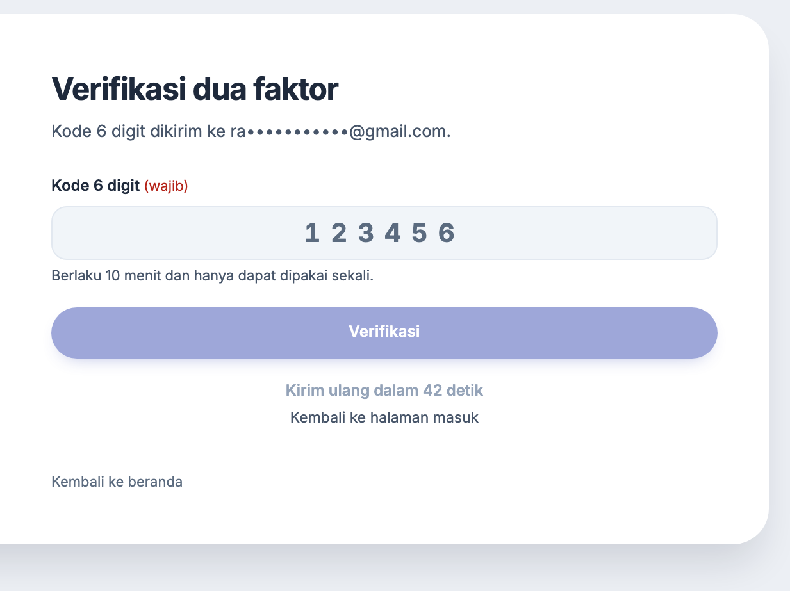
Gambar 2. Verifikasi dua faktor: kode 6 digit, berlaku 10 menit, hanya sekali pakai.
2.1
Memasukkan kode OTP
- Buka email terdaftar. Kode 6 digit dikirim setiap kali Anda masuk sebagai superadmin.
- Ketik kode pada kolom Kode 6 digit, lalu klik Verifikasi.
- Bila kode kedaluwarsa, tunggu hitungan Kirim ulang dalam … detik selesai, lalu minta kode baru.
Jangan bagikan kode. Tidak ada petugas yang berhak meminta kode OTP admin. Kode yang bocor berarti seluruh data sekolah berisiko.
2.2
Mengganti kata sandi awal
Akun baru memakai NIP atau ID admin sebagai kata sandi awal, sehingga aplikasi meminta penggantian sebelum halaman lain dapat dibuka.
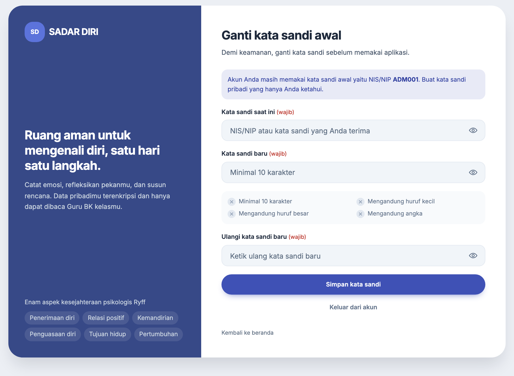
Gambar 3. Halaman ganti kata sandi awal. Empat syarat kekuatan sandi berubah menjadi centang saat terpenuhi.
- Isi Kata sandi saat ini — sandi yang Anda terima.
- Isi Kata sandi baru: minimal 10 karakter, mengandung huruf besar, huruf kecil, dan angka.
- Ulangi pada kolom Ulangi kata sandi baru, lalu klik Simpan kata sandi.
- Setelah tersimpan, Anda langsung dibawa ke beranda peran Anda dengan sandi baru.
Bab 03 · Portal Superadmin
Dashboard admin
Ringkasan kesehatan data dan penggunaan aplikasi dalam satu layar.
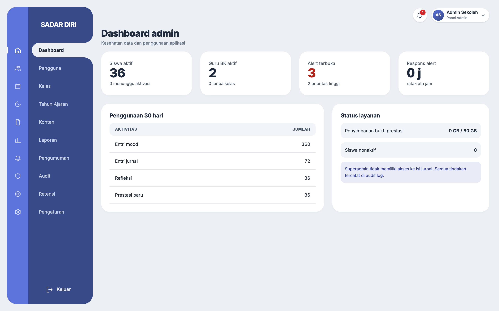
Gambar 4. Dashboard admin: empat angka kunci, penggunaan 30 hari, dan status layanan.
3.1
Arti setiap angka
Siswa aktif
Jumlah akun siswa berstatus aktif, dengan keterangan berapa akun yang masih menunggu aktivasi.
Guru BK aktif
Akun Guru BK aktif beserta jumlah guru yang belum memiliki kelas dampingan.
Alert terbuka
Alert risiko yang belum ditutup, dengan penanda berapa di antaranya prioritas tinggi.
Respons alert
Rata-rata waktu (jam) dari alert dibuat sampai ditindaklanjuti Guru BK.
Penggunaan 30 hari merekap entri mood, jurnal, refleksi, dan prestasi baru. Angka yang menurun tajam biasanya berarti sosialisasi ke siswa perlu diulang.
Status layanan menampilkan pemakaian penyimpanan bukti prestasi dan jumlah siswa nonaktif. Bila kapasitas mendekati batas, unduh dan arsipkan bukti lama.
Angka turun tajam
Periksa jadwal sosialisasi dan pastikan fitur jurnal masih menyala di Pengaturan.
Alert menumpuk
Ingatkan Guru BK menutup alert setelah pendampingan; alert terbuka menurunkan respons.
Penyimpanan penuh
Arsipkan bukti prestasi lama atau naikkan kapasitas sebelum tahun ajaran baru.
3.2
Ritme pemeriksaan dashboard
| Irama | Yang diperiksa |
|---|
| Mingguan | Respons alert dan jumlah alert terbuka; ingatkan Guru BK menutup alert setelah pendampingan. |
| Bulanan | Tren penggunaan 30 hari, akun menunggu aktivasi, dan siswa yang belum pernah masuk. |
| Per semester | Kapasitas penyimpanan bukti prestasi dan jumlah akun nonaktif yang perlu diarsipkan. |
Bab 04 · Portal Superadmin
Akun pengguna
Satu tabel untuk seluruh siswa dan Guru BK, lengkap dengan status dan aksi per akun.
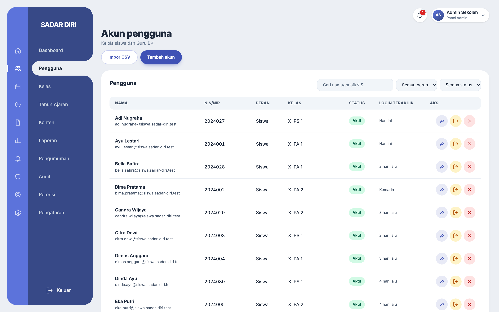
Gambar 5. Akun pengguna: pencarian, filter peran dan status, tabel 20 baris per halaman, serta tiga aksi per akun.
4.1
Membaca tabel
| Kolom / tombol | Keterangan |
|---|
| Nama & email | Identitas akun. Email dipakai untuk pemulihan sandi dan notifikasi; OTP hanya untuk superadmin. |
| NIS/NIP | Nomor induk; sekaligus kata sandi awal akun baru. |
| Peran | Siswa atau Guru BK. Superadmin tidak dibuat dari halaman ini. |
| Kelas | Kelas siswa, atau daftar kelas dampingan untuk Guru BK. |
| Status | Aktif, Nonaktif, Menunggu, Arsip, atau Alumni. |
| Login terakhir | Relatif hari ini, kemarin, atau jumlah hari lalu. |
| Tiga aksi | Reset kata sandi (ikon kunci), putus sesi (ikon keluar), dan nonaktifkan/aktifkan (ikon × atau ✓). |
Filter cepat. Gunakan Semua peran dan Semua status untuk menyaring, atau kolom Cari nama/email/NIS untuk pencarian langsung.
Navigasi halaman. Pilih 20 atau 50 baris per halaman di kiri bawah, lalu gunakan Sebelumnya / Berikutnya.
4.2
Tiga aksi per akun
Reset sandi
Mengembalikan sandi ke NIS/NIP dan memutus sesi aktif. Wajib dicatat alasannya untuk audit.
Putus sesi
Mengeluarkan pengguna dari semua perangkat tanpa mengubah sandi atau status akun.
Nonaktifkan
Menutup akses tanpa menghapus data. Gunakan untuk siswa pindah atau akun uji.
Sebelum menonaktifkan. Pastikan siswa tidak sedang memiliki sesi aktif, dan catat alasan pada kolom yang tersedia agar jejak keputusan tetap jelas.
Bab 05 · Portal Superadmin
Menambah akun siswa & Guru BK
Satu formulir, dua peran. Perbedaan utamanya ada pada kelas dan kata sandi.
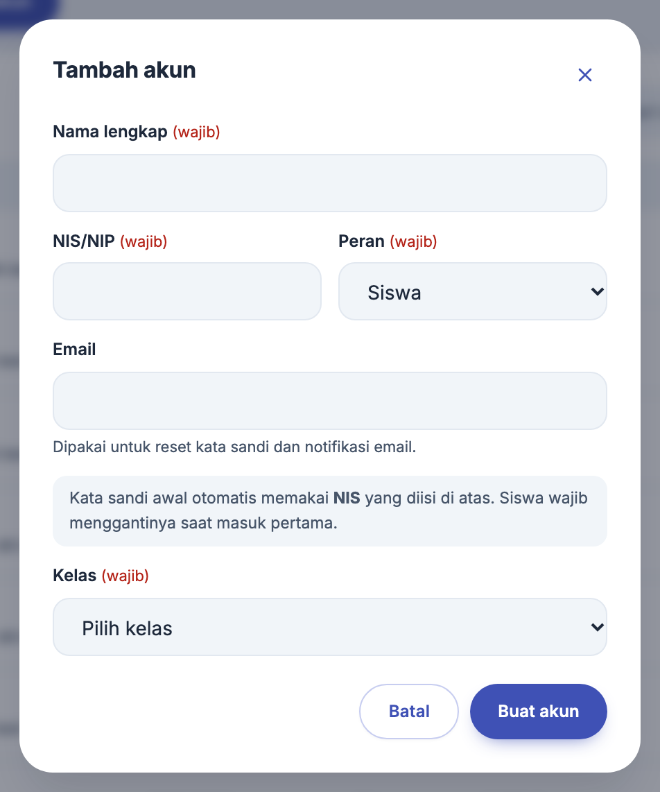
Gambar 6. Tambah akun siswa: isi nama, NIS, email, lalu pilih kelas.
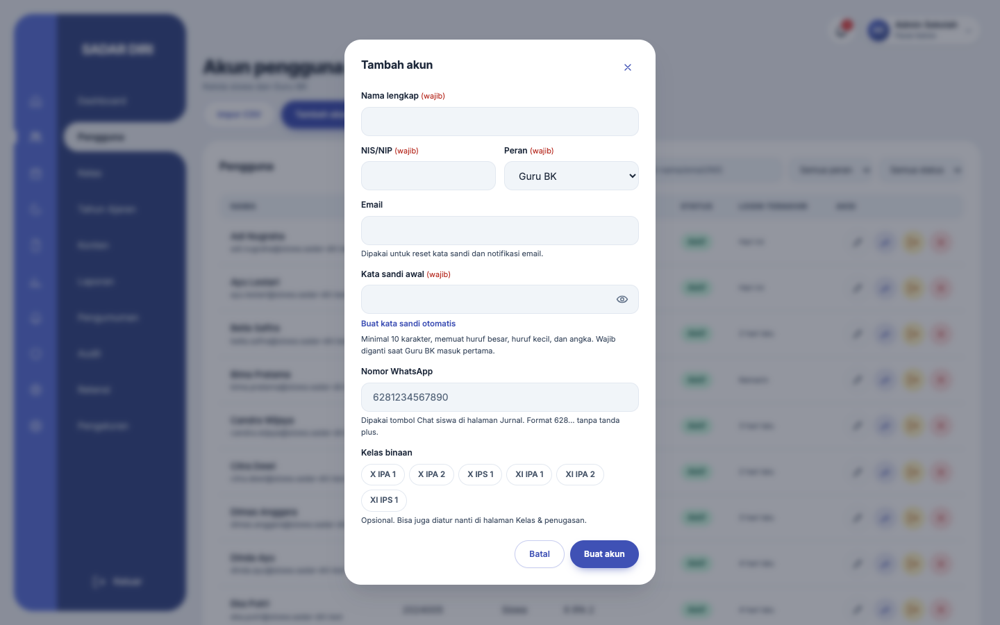
Gambar 7. Tambah akun Guru BK: sandi wajib diisi, nomor WhatsApp diisi di sini, kelas boleh lebih dari satu.
5.1
Langkah menambah siswa
- Di halaman Pengguna, klik Tambah akun.
- Isi Nama lengkap dan NIS/NIP — untuk siswa gunakan NIS.
- Pilih Peran: Siswa, lalu isi Email aktif; alamat ini dipakai untuk pemulihan sandi dan notifikasi.
- Tidak ada kolom sandi untuk siswa: sandi awal otomatis memakai NIS yang diisi.
- Pilih Kelas, lalu klik Buat akun. Siswa langsung aktif dan wajib mengganti sandi saat pertama masuk.
Buat kata sandi otomatis menghasilkan sandi acak yang memenuhi syarat keamanan. Salin dan sampaikan kepada guru yang bersangkutan secara pribadi.
Kelas dampingan. Guru BK tanpa kelas tidak dapat membuka data siswa. Tetapkan minimal satu kelas agar portalnya berfungsi.
5.2
Setelah akun dibuat
Sandi awal
NIS/NIP dipakai sebagai sandi awal. Pengguna wajib menggantinya saat masuk pertama.
Email aktif
Alamat email dipakai untuk pemulihan sandi dan notifikasi layanan.
Kelas benar
Salah kelas berarti Guru BK tidak melihat siswa tersebut. Periksa kelas sebelum menyimpan karena belum ada aksi pindah kelas per siswa.
Nomor WhatsApp Guru BK. Isi kolom Nomor WhatsApp saat membuat akun Guru BK (format 628…, tanpa tanda plus). Nomor itu yang tampil pada tombol Chat di halaman Jurnal siswa kelas binaannya. Nomor dapat diperbaiki kapan saja lewat ikon ubah pada baris Guru BK di halaman Pengguna.
Sampaikan sekali lagi. Beri tahu siswa dan guru alamat aplikasi, NIS/NIP, serta kewajiban mengganti sandi pada saat penyerahan akun.
Bab 06 · Portal Superadmin
Reset kata sandi & impor massal
Dua jalur untuk memulihkan akses: satu akun atau satu angkatan sekaligus.
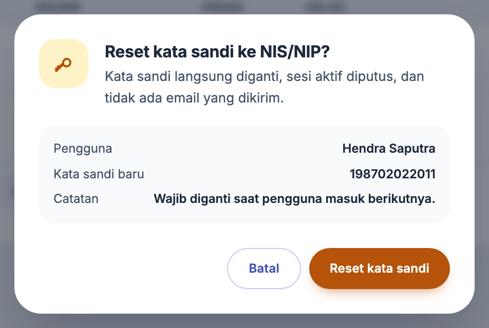
Gambar 8. Dialog reset kata sandi: sandi langsung diganti ke NIS/NIP, lalu wajib diubah saat masuk berikutnya.
6.1
Mereset sandi satu akun
- Pada tabel pengguna, klik ikon kunci di baris akun yang bermasalah.
- Periksa nama, NIS/NIP, dan kelas pada dialog. Tambahkan Catatan bila perlu, mis. Lupa sandi setelah libur.
- Klik Reset kata sandi. Sandi kembali menjadi NIS/NIP.
- Sampaikan kepada pengguna bahwa ia harus mengganti sandi saat masuk berikutnya.
Jangan kirim lewat grup. Sampaikan sandi sementara secara pribadi. Setiap reset tercatat di audit log beserta alasan yang Anda tulis.
6.2
Impor CSV
- Klik Impor CSV di halaman Pengguna, lalu pilih berkas dari komputer.
- Gunakan judul kolom: name, identity_number, email, role (student/counselor), class_name, dan opsional password.
- Baris dengan email tidak valid atau NIS sudah terdaftar ditandai gagal; baris valid langsung aktif dengan sandi awal NIS/NIP bila kolom password kosong.
- Periksa hasil impor, lalu perbaiki baris yang gagal melalui formulir Tambah akun.
Kolom wajib. name, identity_number, dan role; class_name wajib untuk siswa dan harus sama persis dengan nama kelas aktif. Impor tidak menugaskan kelas untuk Guru BK — atur setelahnya lewat menu Kelas.
Uji tiga baris dulu. Impor percobaan memastikan pemetaan kolom benar sebelum mengunggah satu angkatan penuh.
6.3
Kegagalan impor yang sering terjadi
Email tidak valid
Baris dilewati bila email kosong atau formatnya salah. Perbaiki di berkas, lalu impor ulang.
Kelas tidak ditemukan
Nama kelas harus sama persis dengan yang ada di menu Kelas, termasuk spasi dan tingkat.
NIS sudah terdaftar
Identitas ganda ditolak. Cari akun lama lewat kolom pencarian sebelum membuat yang baru.
Setelah impor. Buka menu Pengguna, saring peran Siswa, lalu periksa beberapa akun baru: kelas, email, dan statusnya harus sesuai berkas.
Bab 07 · Portal Superadmin
Kelas & penugasan
Kelas adalah simpul utama: menentukan wali kelas, Guru BK pendamping, dan siapa boleh melihat data siswa.
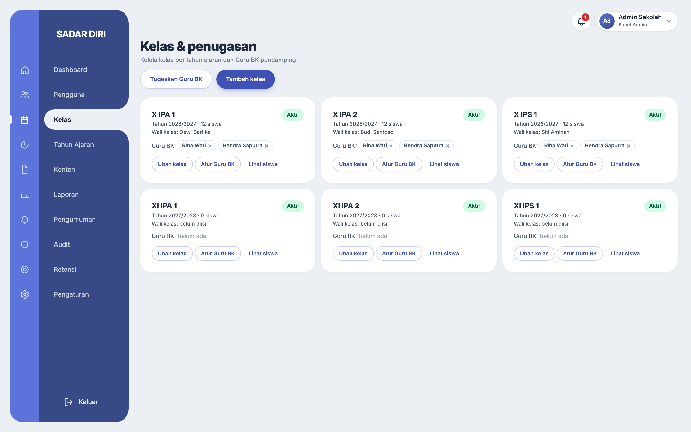
Gambar 9. Kelas & penugasan: kartu per kelas dengan tahun ajaran, wali kelas, Guru BK, jumlah siswa, dan tiga aksi.
7.1
Membaca kartu kelas
| Bagian kartu | Keterangan |
|---|
| Nama kelas & badge | X IPA 1 beserta status Aktif. Kelas nonaktif tidak muncul pada pilihan kenaikan kelas. |
| Tahun ajaran | Periode berlaku, mis. 2026/2027. |
| Jumlah siswa | Banyak siswa yang terdaftar di kelas tersebut. |
| Wali kelas | Guru pendamping administratif; boleh kosong. |
| Guru BK | Satu atau beberapa guru pendamping. Tanpa Guru BK, jurnal kelas ini tidak terbaca siapa pun. |
| Tiga aksi | Ubah kelas, Atur Guru BK, Lihat siswa. |
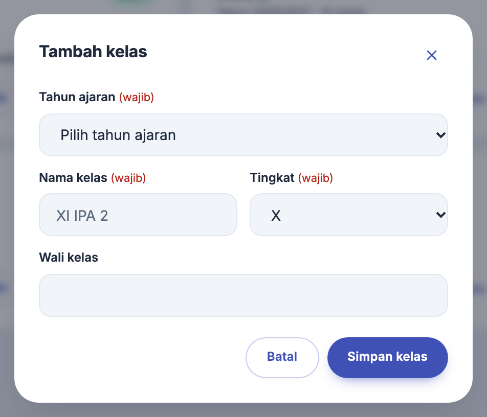
Gambar 10. Dialog Tambah kelas: tahun ajaran wajib dipilih lebih dulu, lalu nama, tingkat, dan wali kelas.
Alur disarankan: buat tahun ajaran → buat kelas → tugaskan Guru BK → tambah atau impor siswa → baru sosialisasikan aplikasi ke siswa.
Bab 08 · Portal Superadmin
Mengubah kelas & menugaskan Guru BK
Dua dialog yang paling sering dipakai saat tahun ajaran berganti.
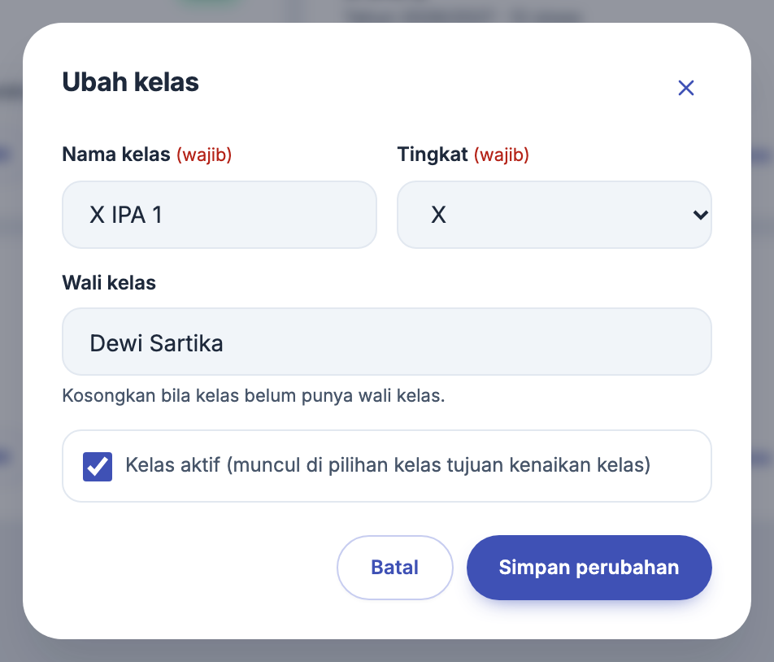
Gambar 11. Dialog Ubah kelas: nama kelas, tingkat, wali kelas, dan status aktif.
8.1
Mengubah data kelas
- Klik Ubah kelas pada kartu yang dituju.
- Perbaiki Nama kelas dan Tingkat (X, XI, XII).
- Isi atau kosongkan Wali kelas. Kosongkan bila belum ditetapkan.
- Biarkan Kelas aktif tercentang agar kelas muncul di pilihan kenaikan kelas. Klik Simpan perubahan.
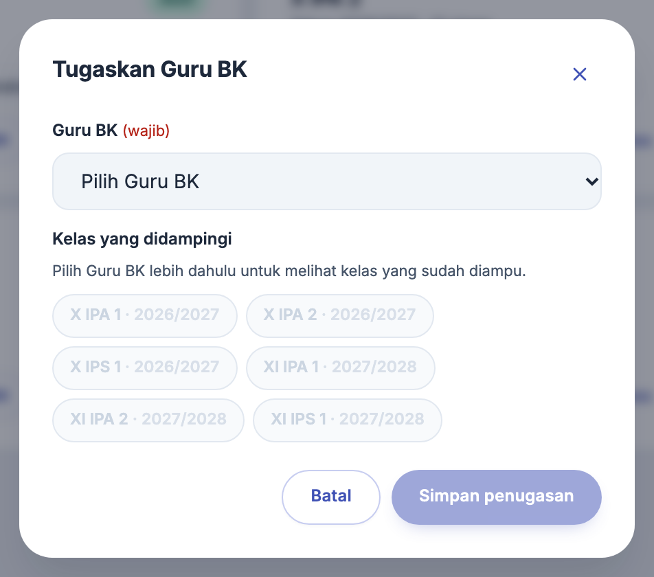
Gambar 12. Dialog Tugaskan Guru BK: pilih guru, lalu tandai kelas yang didampingi.
8.2
Menugaskan Guru BK
- Klik Atur Guru BK pada kartu kelas, lalu pilih nama guru.
- Centang satu atau beberapa kelas yang akan didampingi.
- Simpan. Daftar di bawah hanya menampilkan kelas yang sudah didampingi guru tersebut.
Satu guru, banyak kelas. Penugasan berlaku per kelas, bukan per siswa, sehingga siswa baru otomatis ikut terpantau.
Melepas penugasan memutus akses guru ke jurnal kelas itu, tetapi riwayat catatan konseling yang sudah dibuat tetap tersimpan.
Bab 09 · Portal Superadmin
Tahun ajaran
Menutup tahun lama dan menyiapkan periode baru sebelum siswa dipindahkan.
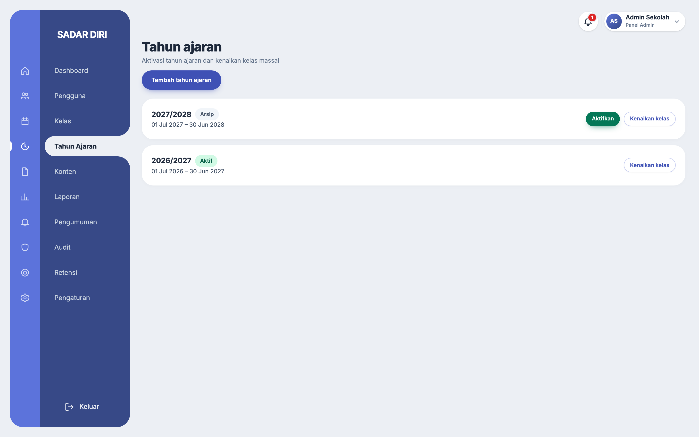
Gambar 13. Tahun ajaran: daftar periode, penanda Aktif, dan tombol Kenaikan kelas per periode.
9.1
Menambah tahun ajaran
- Klik Tambah tahun ajaran, isi nama (mis. 2027/2028) serta tanggal mulai dan selesai.
- Simpan. Hanya satu tahun ajaran dapat berstatus Aktif pada satu waktu.
- Sebelum menaikkan kelas, pastikan kelas tujuan untuk tahun baru sudah dibuat di menu Kelas.
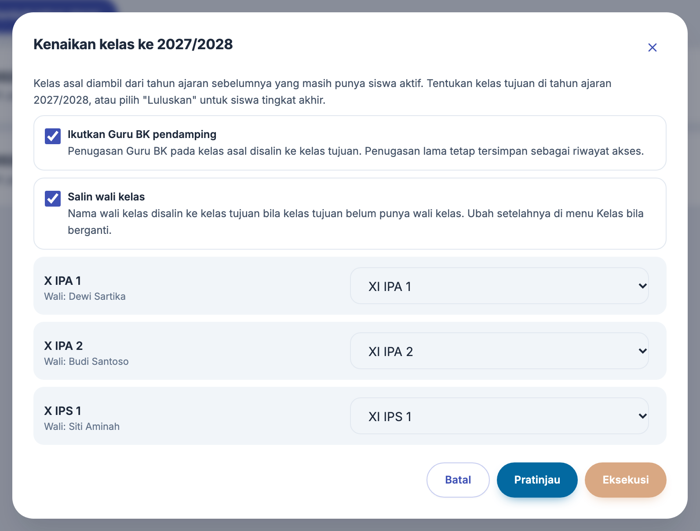
Gambar 14. Dialog Kenaikan kelas: opsi membawa penugasan Guru BK dan wali kelas, serta pemetaan kelas asal ke kelas tujuan.
Bawa penugasan menyalin Guru BK pendamping ke kelas tujuan. Salin wali kelas memindahkan wali kelas bila kelas tujuan belum punya.
Pilih kelulusan untuk siswa tingkat akhir. Siswa yang diluluskan berubah menjadi alumni dan tidak lagi muncul di kelas aktif.
Bab 10 · Portal Superadmin
Pratinjau sebelum menaikkan kelas
Menghitung dampak tanpa mengubah data. Selalu jalankan pratinjau sebelum eksekusi.
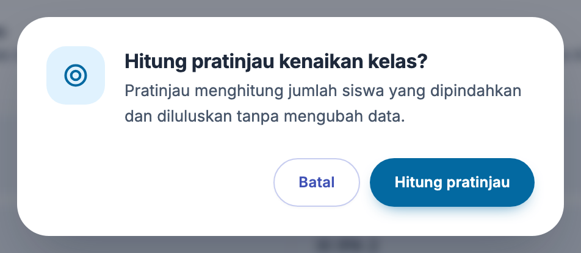
Gambar 15. Konfirmasi pratinjau: sistem menjelaskan bahwa perhitungan berjalan tanpa mengubah data.
10.1
Alur aman kenaikan kelas
- Pratinjau. Klik Pratinjau pada dialog kenaikan kelas, lalu Hitung pratinjau. Hasilnya menampilkan jumlah siswa dipindahkan, siswa diluluskan, penugasan Guru BK disalin, dan wali kelas disalin.
- Periksa angka. Bandingkan dengan jumlah siswa di menu Kelas. Angka yang tidak wajar biasanya berarti pemetaan kelas belum lengkap.
- Eksekusi. Bila sesuai, klik Eksekusi. Proses berjalan sekali jalan dan tidak dapat dibatalkan otomatis.
- Verifikasi. Buka Kelas dan Pengguna untuk memastikan siswa sudah berada di kelas baru dan alumni berstatus benar.
Tidak ada tombol urungkan. Bila terjadi kesalahan, perbaiki manual per siswa melalui menu Pengguna. Karena itu pratinjau wajib dijalankan lebih dulu.
Kapan dijalankan? Setelah pembagian kelas tahun baru final dan nilai rapor keluar, sebelum tahun ajaran baru diaktifkan.
Simpan bukti. Catat jumlah siswa yang dipindahkan dan diluluskan untuk berita acara.
Dipindahkan
Siswa naik satu tingkat ke kelas tujuan yang dipetakan.
Diluluskan
Siswa tingkat akhir menjadi alumni dan keluar dari kelas aktif.
Disalin
Penugasan Guru BK dan wali kelas ikut ke kelas tujuan.
10.2
Dua penyebab eksekusi gagal
| Penyebab | Tindakan |
|---|
| Kelas tujuan belum dibuat | Buat kelas untuk tahun ajaran baru di menu Kelas, lalu ulangi pratinjau. |
| Siswa tingkat akhir tanpa pilihan | Tentukan kelas tujuan atau tandai kelulusan sebelum menekan Eksekusi. |
10.3
Daftar periksa sebelum eksekusi
Data sudah siap
- Kelas tujuan tahun baru sudah dibuat.
- Pemetaan setiap kelas asal sudah dipilih.
- Daftar siswa tingkat akhir sudah final.
Setelah eksekusi
- Jumlah siswa per kelas sesuai rencana.
- Alumni tidak lagi muncul di kelas aktif.
- Hasil pratinjau disimpan sebagai bukti.
Bab 11 · Portal Superadmin
Pengumuman
Menyampaikan informasi ke semua pengguna, peran tertentu, atau satu kelas.
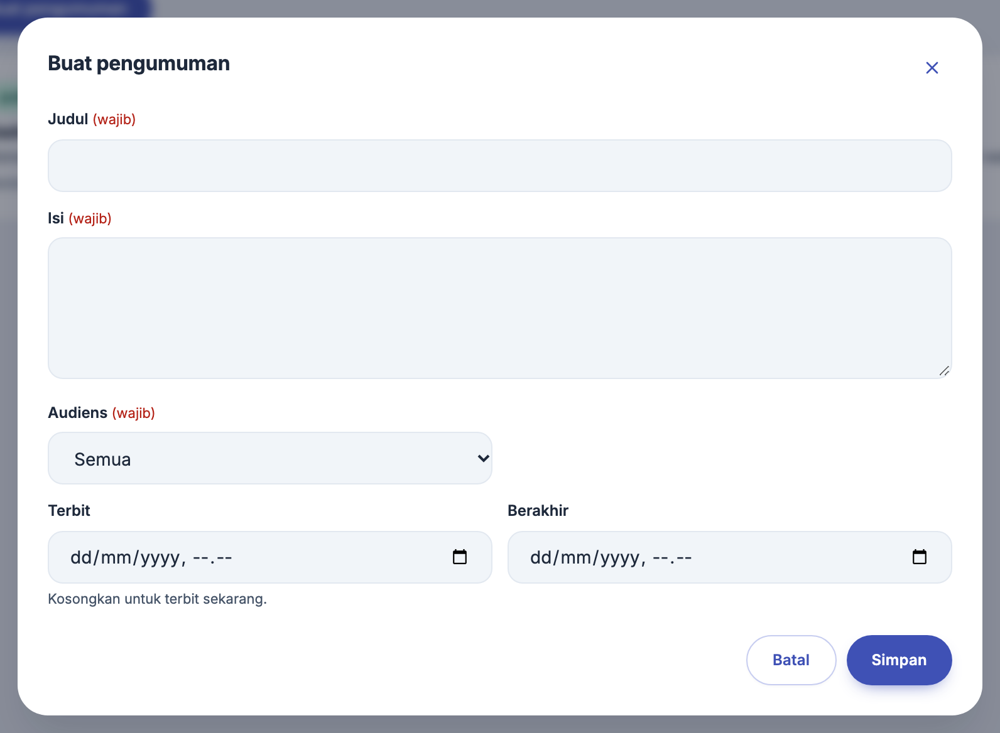
Gambar 16. Dialog Buat pengumuman: judul, isi, audiens, serta jadwal terbit dan berakhir.
11.1
Membuat pengumuman
- Buka menu Pengumuman, klik Buat pengumuman.
- Isi Judul yang singkat dan Isi yang menjelaskan tindakan yang diharapkan.
- Pilih Audiens: Semua, peran tertentu, atau kelas tertentu.
- Kosongkan Terbit untuk langsung tayang, atau isi tanggal dan jam untuk menjadwalkan. Isi Berakhir bila pengumuman bersifat sementara.
- Klik Simpan.
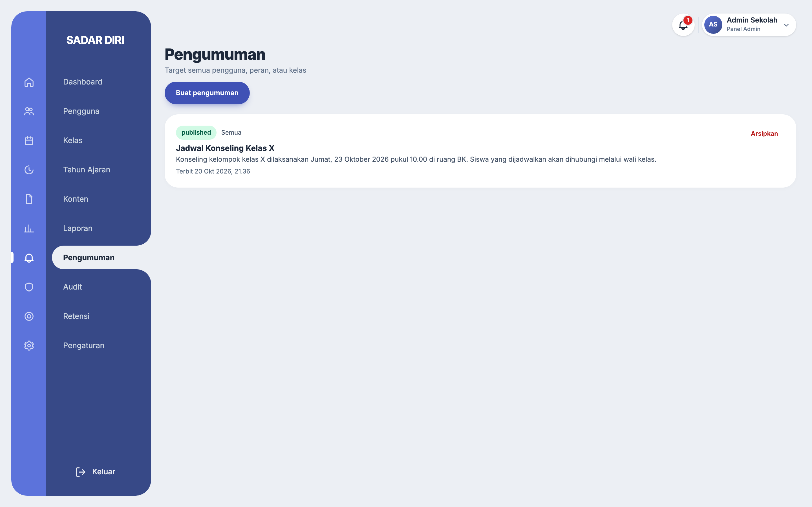
Gambar 17. Daftar pengumuman: badge status, audiens, isi ringkas, waktu terbit, dan tombol Arsipkan.
Status pengumuman: published (tayang), scheduled (terjadwal), dan archived (diarsipkan). Pengumuman terjadwal tayang otomatis pada waktunya.
Arsipkan, jangan hapus. Pengumuman lama sebaiknya diarsipkan agar riwayat komunikasi sekolah tetap utuh dan dapat diaudit.
Bab 12 · Portal Superadmin
Konten pembelajaran
Mengelola bahan bacaan dan pertanyaan pemandu yang dibaca siswa setiap hari.
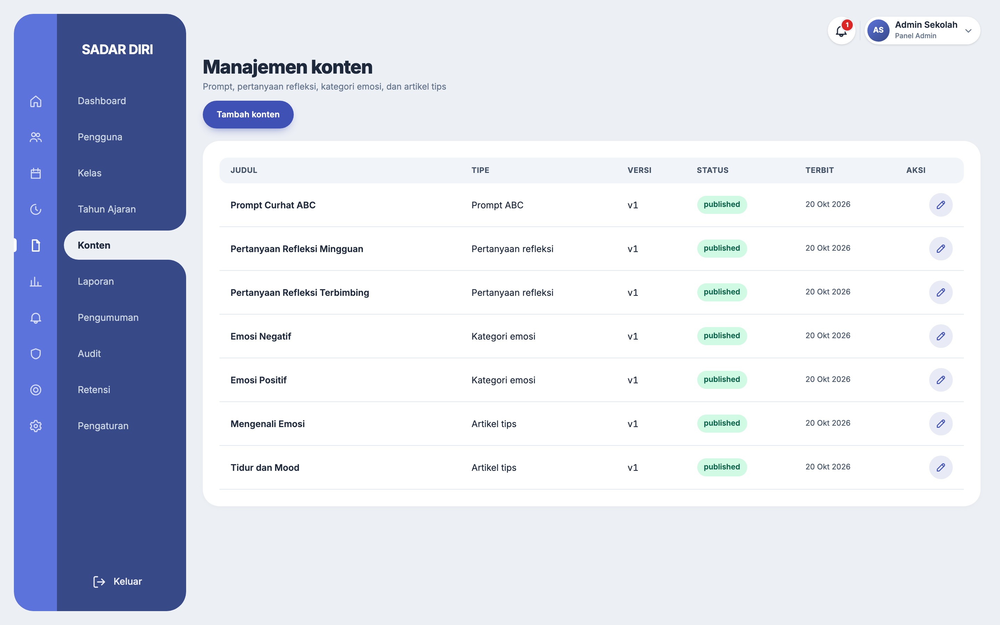
Gambar 18. Manajemen konten: prompt curhat ABC, pertanyaan refleksi, kategori emosi, dan artikel tips beserta versinya.
12.1
Menambah dan menyunting konten
- Klik Tambah konten, pilih tipe: Prompt ABC, Pertanyaan refleksi, Kategori emosi, atau Artikel tips.
- Isi judul dan isi konten sesuai tipe. Gunakan bahasa Indonesia yang mudah dipahami siswa.
- Simpan sebagai draf, lalu terbitkan bila sudah siap. Setiap perubahan menaikkan nomor Versi.
- Gunakan ikon pensil untuk menyunting. Konten lama tetap tersimpan sebagai versi sebelumnya.
Mengapa berversi? Perubahan pertanyaan refleksi dapat memengaruhi perbandingan jawaban antarperiode. Versi menjaga jejak perubahan tetap jelas.
Jangan menghapus prompt yang sedang dipakai. Nonaktifkan saja, agar entri jurnal siswa lama tetap memiliki konteks pertanyaannya.
12.2
Empat tipe konten
| Tipe | Muncul di |
|---|
| Prompt ABC | Layar curhat siswa, sebagai pembuka sebelum menulis. |
| Pertanyaan refleksi | Ruang refleksi mandiri dan sesi refleksi terbimbing Guru BK. |
| Kategori emosi | Pemilih mood harian dan label emosi pada jurnal. |
| Artikel tips | Beranda siswa bagian bacaan singkat. |
12.3
Kaidah menulis konten siswa
Kalimat pendek
Satu pertanyaan, satu maksud. Hindari kalimat majemuk yang membingungkan.
Tanpa label
Gunakan pertanyaan terbuka, bukan cap seperti “anak pemalas” atau “bermasalah”.
Sertakan langkah
Setiap tips diakhiri satu tindakan kecil yang bisa dicoba siswa hari itu juga.
Bab 13 · Portal Superadmin
Laporan agregat
Membaca tren sekolah tanpa membuka data pribadi satu siswa pun.
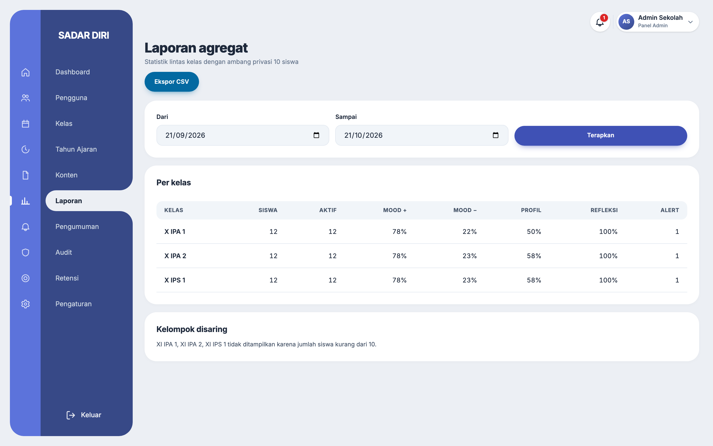
Gambar 19. Laporan agregat: rentang tanggal, rekap per kelas, dan catatan kelas yang disaring.
13.1
Membaca laporan
- Buka menu Laporan, isi tanggal Dari dan Sampai sesuai periode yang ingin dibaca.
- Klik Terapkan. Tabel Per kelas menampilkan jumlah siswa, siswa aktif, persentase mood positif dan negatif, kelengkapan profil, partisipasi refleksi, dan jumlah alert terbuka.
- Bandingkan antarperiode untuk melihat dampak program sekolah, bukan menilai individu.
- Klik Ekspor CSV untuk menyimpan hasil sebagai arsip rapat atau lampiran laporan tahunan.
Ambang privasi. Kelas dengan kurang dari 10 siswa tidak ditampilkan agar angka tidak dipakai menebak kondisi individu.
Data agregat. Isi jurnal, refleksi, dan catatan konseling tidak pernah masuk ke laporan admin.
13.2
Arti kolom laporan
| Kolom | Keterangan |
|---|
| Siswa | Jumlah anggota aktif kelas tersebut. |
| Aktif | Siswa yang tercatat beraktivitas pada rentang terpilih. |
| Mood + / Mood − | Persentase entri mood positif dan negatif dari seluruh entri mood kelas. |
| Profil | Persentase siswa dengan kelengkapan profil 80% ke atas. |
| Refleksi | Persentase siswa yang mengirim refleksi pada rentang terpilih. |
| Alert | Jumlah alert yang belum diselesaikan untuk kelas tersebut. |
13.3
Pemanfaatan laporan
Rapat wali kelas
Bandingkan kelas pada periode yang sama, bukan antarindividu.
Evaluasi program
Lihat apakah sosialisasi jurnal menaikkan siswa aktif bulan berikutnya.
Laporan tahunan
Simpan rekap per semester sebagai lampiran dokumen sekolah.
Bab 14 · Portal Superadmin
Audit log
Menelusuri siapa mengakses apa, kapan, dan dengan alasan apa.
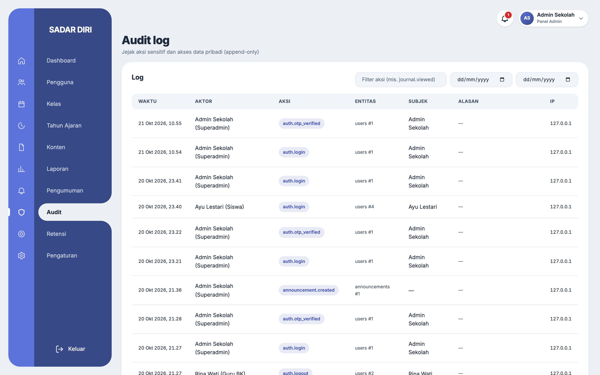
Gambar 20. Audit log: waktu, aktor, aksi, entitas, subjek, alasan, dan alamat IP.
14.1
Membaca audit log
- Saring dengan kolom Filter aksi, mis. journal.viewed, atau rentang tanggal.
- Perhatikan kolom Aktor dan Subjek: keduanya menunjukkan siapa membuka data siapa.
- Kolom Alasan terisi pada aksi yang diwajibkan memberi keterangan, seperti reset sandi.
- Log bersifat append-only — tidak dapat disunting atau dihapus dari antarmuka.
Audit rutin. Periksa log setiap bulan: akses jurnal di luar kelas dampingan, reset sandi massal, dan perubahan pengaturan.
Temuan mencurigakan? Nonaktifkan akun terkait lebih dulu, lalu reset sandinya. Simpan tangkapan layar log sebagai bukti.
14.2
Aksi yang sering dicari
| Nama aksi | Arti |
|---|
| journal.viewed | Guru BK membuka isi jurnal seorang siswa. |
| user.password_reset | Admin mengembalikan sandi akun ke NIS/NIP beserta alasannya. |
| academic_year.promoted | Kenaikan kelas dijalankan: siswa dipindahkan dan penugasan disalin. |
| settings.updated | Pengaturan sekolah diubah, termasuk kebijakan retensi. |
14.3
Menjaga jejak audit
Jangan hapus
Log bersifat tetap. Koreksi dilakukan dengan mencatat tindakan baru, bukan menghapus baris lama.
Simpan bukti
Tangkap layar temuan penting dan simpan bersama berita acara pemeriksaan.
Tindak lanjuti
Setiap temuan ditutup dengan tindakan: teguran, reset sandi, atau penonaktifan akun.
Bab 15 · Portal Superadmin
Retensi data
Memastikan data lama tidak disimpan melebihi kebijakan sekolah.
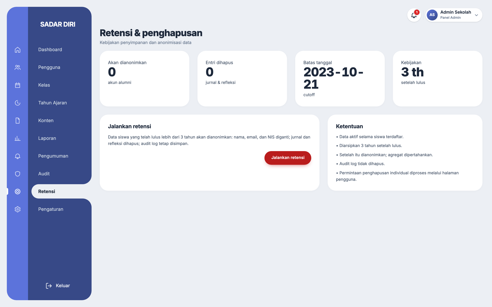
Gambar 21. Retensi & penghapusan: perkiraan akun dianonimkan, entri dihapus, batas tanggal, dan kebijakan.
15.1
Menjalankan retensi
- Buka menu Retensi. Sistem menampilkan perkiraan jumlah akun alumni yang akan dianonimkan dan entri yang akan dihapus.
- Periksa batas tanggal yang dipakai — biasanya mengikuti pengaturan retensi setelah lulus.
- Pastikan angka sesuai ekspektasi, lalu klik Jalankan retensi, isi alasan pada dialog konfirmasi, dan setujui.
- Setelah selesai, periksa kembali menu Pengguna untuk memastikan akun alumni sudah berstatus benar.
Tindakan permanen. Jurnal, refleksi, dan data pribadi yang melewati batas akan dihapus dan tidak dapat dipulihkan.
Arsipkan lebih dulu. Bila ragu, unduh laporan agregat dan simpan sebagai arsip sekolah sebelum menjalankan retensi.
15.2
Apa yang dihapus, apa yang disimpan
| Dihapus atau dianonimkan | Tetap disimpan |
|---|
| Nama, email, dan NIS siswa alumni (diganti label Alumni Anonim dan nomor ANON-id). | Angka agregat pada laporan tahunan. |
| Seluruh entri jurnal dan refleksi siswa tersebut. | Audit log akses dan tindakan admin. |
| Isi catatan konseling (diganti keterangan bahwa data dianonimkan). | Catatan mood, prestasi, dan berkas bukti tetap ada tanpa nama pemilik. |
Sekali setahun sudah cukup. Jalankan retensi setelah proses kelulusan dan setelah arsip laporan tahunan diunduh, agar tidak ada data yang hilang sebelum dilaporkan.
Uji pada satu angkatan. Bila kebijakan retensi baru diubah, jalankan pada angkatan terlama lebih dulu, periksa hasilnya, baru lanjutkan ke angkatan berikutnya.
Bab 16 · Portal Superadmin
Pengaturan sekolah
Identitas sekolah, kebijakan privasi, dan fitur yang boleh dipakai siswa.
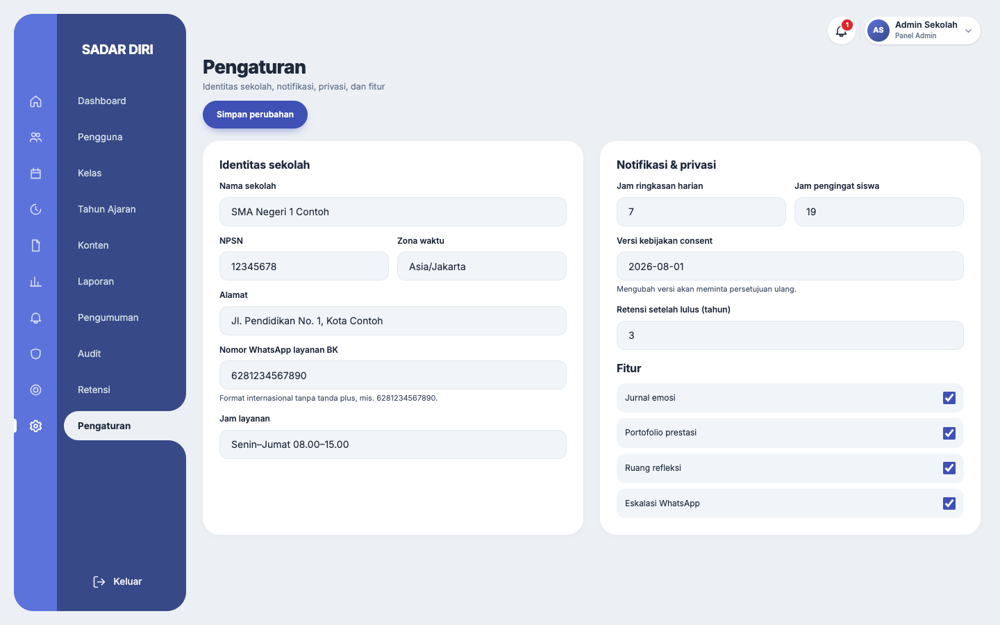
Gambar 22. Pengaturan: identitas sekolah, notifikasi & privasi, dan sakelar fitur.
16.1
Yang perlu diisi
| Bagian | Keterangan |
|---|
| Nama sekolah, NPSN, zona waktu | Muncul pada laporan dan dokumen cetak. Zona waktu memengaruhi jadwal pengingat. |
| Alamat | Alamat lengkap sekolah untuk kop laporan. |
| Nomor WhatsApp layanan BK | Format internasional tanpa tanda plus, mis. 6281234567890. Dipakai tombol Curhat ke Guru BK. |
| Jam layanan | Ditampilkan kepada siswa, mis. Senin–Jumat 08.00–15.00. |
| Jam ringkasan harian & pengingat siswa | Waktu pengiriman ringkasan untuk Guru BK dan pengingat untuk siswa. |
| Versi kebijakan consent | Menaikkan versi akan meminta persetujuan ulang seluruh siswa. |
| Retensi setelah lulus | Jumlah tahun data disimpan setelah siswa lulus; dipakai halaman Retensi. |
| Sakelar fitur | Jurnal emosi, Portofolio prestasi, Ruang refleksi, dan Eskalasi WhatsApp dapat dinyalakan atau dimatikan. |
Simpan perubahan menerapkan seluruh isian sekaligus. Perubahan versi consent dan retensi berdampak luas, jadi lakukan di awal tahun ajaran.
Matikan fitur dengan hati-hati. Menonaktifkan jurnal atau refleksi menyembunyikan menu bagi siswa, tetapi data lama tetap tersimpan.
Uji setelah menyimpan. Masuk sebagai satu siswa dan satu Guru BK untuk memastikan menu, pengingat, dan tombol Curhat mengikuti pengaturan baru.
Bab 17 · Penutup
Tata kelola rapi, layanan berjalan
Irama kerja tahunan yang menjaga data sekolah tetap akurat, aman, dan patuh kebijakan.
17.1
Kalender kerja admin
| Irama | Kegiatan |
|---|
| Awal tahun | Buat tahun ajaran dan kelas, tugaskan Guru BK, impor siswa, tinjau pengaturan sekolah. |
| Bulanan | Periksa akun nonaktif, audit log, kapasitas penyimpanan, dan laporan agregat. |
| Akhir semester | Tinjau konten dan pengumuman, bersihkan akun uji, perbarui nomor layanan BK. |
| Akhir tahun | Jalankan pratinjau kenaikan kelas, eksekusi, lalu tinjau kebijakan retensi. |
17.2
Bila ada masalah
Guru BK tidak melihat siswa
Guru tersebut belum ditugaskan ke kelas mana pun. Tetapkan lewat tombol Atur Guru BK pada kartu kelas.
Kenaikan kelas gagal
Biasanya kelas tujuan belum dibuat atau kelas asal sudah nonaktif. Lengkapi pemetaan, lalu ulangi pratinjau.
Siswa tidak menerima email
Siswa dan Guru BK tidak memakai OTP. Bila email pemulihan tidak sampai, gunakan tombol reset sandi di menu Pengguna.
Laporan kosong
Rentang tanggal terlalu sempit, atau kelas berisi kurang dari 10 siswa sehingga disembunyikan ambang privasi.
17.3
Daftar periksa bulanan
Data & akses
- Akun nonaktif dan alumni sudah benar.
- Tidak ada Guru BK tanpa kelas dampingan.
- Audit log bulan ini sudah diperiksa.
Layanan
- Pengumuman aktif sesuai kalender sekolah.
- Konten tips dan prompt masih relevan.
- Nomor WhatsApp layanan BK dan nomor Guru BK pada akun masing-masing masih benar.
17.4
Bila butuh bantuan
Admin lain
Untuk hal yang tidak dapat Anda lakukan sendiri, mis. pemulihan akun superadmin.
Vendor aplikasi
Untuk perubahan konfigurasi server, email pengirim OTP, atau penyesuaian kebijakan yang tidak tersedia di menu.
Tim IT sekolah
Untuk masalah server, email pengirim OTP, dan pencadangan basis data.
17.5
Istilah yang sering muncul
| Istilah | Arti di portal admin |
|---|
| Retensi | Lama data disimpan sebelum dihapus atau dianonimkan. |
| Audit log | Catatan akses dan perubahan yang tidak dapat disunting. |
| Ambang privasi | Batas minimal jumlah siswa agar rekap agregat ditampilkan. |
| Versi consent | Nomor kebijakan persetujuan; naik berarti siswa menyetujui ulang. |
Pemisahan tugas: siswa memegang kendali atas ceritanya, Guru BK mendampingi dengan konteks, dan admin memastikan layanan berjalan tanpa membaca isi psikologis siapa pun.